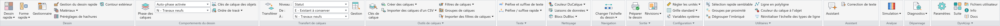
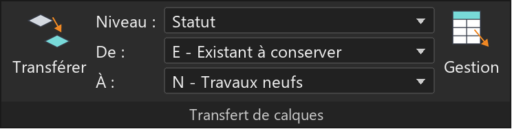
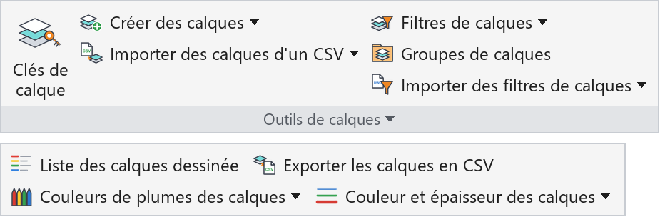
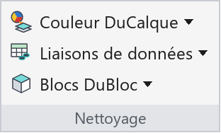
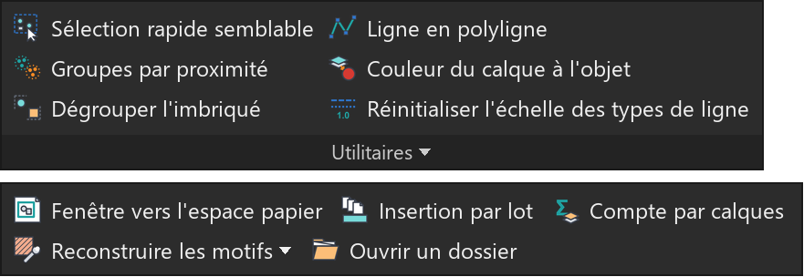
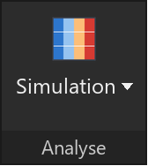
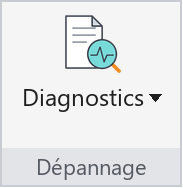
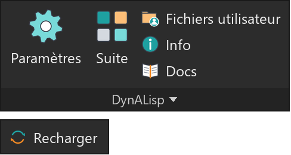

Ruban
Description
L'onglet DynALisp du ruban : un bouton pour chaque outil, dans un groupe de fonctions par famille. Il parle la langue de votre AutoCAD.
Utilisation
- Cliquez l'onglet DynALisp du ruban.
- Cliquez un bouton pour lancer son outil. Sa flèche liste ses préréglages.
- D'autres outils sont dans la partie déroulante de chaque groupe, sous la flèche à côté de son titre.
Groupes de fonctions
L'onglet entier, puis chaque groupe de fonctions avec sa partie déroulante ouverte sous son titre. Les listes déroulantes montrent des valeurs d'exemple.

Dessin

Dessin rapide, Forme rapide, Gestion du dessin rapide, Matériaux, Préréglages de hachures, Contour extérieur.
Comportements du dessin

Phase des calques et ses listes déroulantes Auto-phase et Phase, Clés de calque des objets, Ordre de tracé.
Transfert de calques

Transférer et ses listes déroulantes Niveau, De et À, Gestion.
Outils de calques

Clés de calque, Créer des calques, Importer des calques d'un CSV, Filtres de calques, Groupes de calques, Importer des filtres de calques. Dans la partie déroulante : Liste des calques dessinée, Exporter les calques en CSV, Couleurs de plumes des calques, Couleur et épaisseur des calques.
Texte

Préfixe et suffixe de texte, Préfixe / suffixe rapide, Correction de texte. Dans la partie déroulante : Dictionnaire, Liste des lignes de repère et blocs.
Nettoyage

Couleur DuCalque, Liaisons de données, Blocs DuBloc.
Navigation

Sortie

Préparer le dessin, Révisions. Dans la partie déroulante : Optimiseur de commandes.
Configuration

Régler les unités, Grille standard, Variables système. Dans la partie déroulante : Préférences de fichiers.
Utilitaires

Sélection rapide semblable, Groupes par proximité, Dégrouper l'imbriqué, Ligne en polyligne, Couleur du calque à l'objet, Réinitialiser l'échelle des types de ligne. Dans la partie déroulante : Fenêtre vers l'espace papier, Insertion par lot, Compte par calques, Reconstruire les motifs, Ouvrir un dossier, Assistant.
Analyse

Dépannage

DynALisp

Paramètres, Suite, Fichiers utilisateur, Info, Docs. Dans la partie déroulante : Recharger.
Listes déroulantes
- Comportements du dessin – l'auto-phase et la phase active (Layer Phase).
- Transfert de calques – le niveau, le De et le À d'un transfert (Layer Transfer). Transférer le lance.
Bon à savoir
- Survolez un bouton pour voir ce qu'il fait.
- Un bouton dont l'outil est désactivé dans Dyl-Suite répond Commande inconnue.